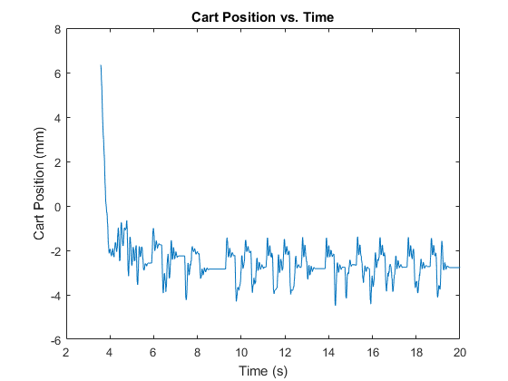
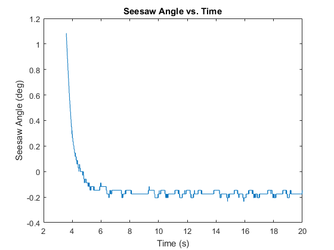

clc; clear; close all; format long currentDirectory = pwd;%Store current directory [fileName,pathName] = uigetfile();%Prompt file pathname and filename cd(pathName);%Change to that directory fileData = importdata(fileName);%Import data using importdata function cd(currentDirectory)%Change back to current directory %Parse the Structure fields = fieldnames(fileData);%Store the field names of the structure variable data dataField = (fileData.(fields{1})); textDataField = (fileData.(fields{2})); numArguments = length(textDataField); %Process String Data time = zeros(1,length(dataField)); position = zeros(1,length(dataField)); angle = zeros(1,length(dataField)); for j = 1: length(textDataField) tempString = lower(textDataField{j}); checkTime = strfind(tempString,'time'); checkPosition = strfind(tempString, 'position'); checkAngle = strfind(tempString, 'angle'); if checkTime >= 1 & isequal(time, zeros(1,length(dataField))) %#ok<AND2> time = dataField(:,j); elseif checkPosition >= 1 position = dataField(:,j); elseif checkAngle >= 1 angle = dataField(:,j); end end figure() plot(time, position) title('Cart Position vs. Time') ylabel('Cart Position (mm)') xlabel('Time (s)') figure() plot(time, angle) title('Seesaw Angle vs. Time') ylabel('Seesaw Angle (deg)') xlabel('Time (s)') % %-------------------------------------------------------------------------- % %Code Provided from Seesaw Analysis % %-------------------------------------------------------------------------- % % Calculate Settling Time [s] % delta = 0.05; % Settling time window [rad] % for i = 1:length(time) % if abs(deg2rad(angle(i))) > delta % Ts = time(i); % Settling Time [s] % if i == length(time) % Ts = Inf; % end % end % end % % % Calculate Deviation Index [rad] % if Ts < time(end) % ts = time(2) - time(1); % Sample time % I1 = find( time == Ts ); % Index of settling time % if time(end) >= Ts + 10 % Check if steady-state response is > 10 sec % I2 = I1 + 10/ts; % Index of steady-state response after 10 sec % else % I2 = length(time); % Index of steady-state response at end of signal % end % Ip = sum(ts*deg2rad(abs(angle(I1:I2))))/(time(I2)-time(I1)); % Deviation Index [rad] % else % Ip = Inf; % end % % % % Calculate Score % score = 0.5*Ts + 0.5*Ip; % % % % Plot Graphs % subplot(2,1,1) % plot(time,position,'k') % xlabel('Time, t [s]') % ylabel('Cart Displacement, position [mm]') % title([char(group),': Ts = ',num2str(Ts),... % ' [s], Ip = ',num2str(Ip),' [rad], Score = ',num2str(score)]) % % subplot(2,1,2) % plot(time,angle,'k') % hold on % plot([Ts,Ts],[-15,15],':r') % plot([0,time(end)],[+delta,+delta],':b') % plot([0,time(end)],[-delta,-delta],':b') % hold off % ylim([round(min(angle-2)/2)*2,round(max(angle+1)/2)*2]) % xlabel('Time, time [s]') % ylabel('Angular Displacement, /theta [deg]') % % % 